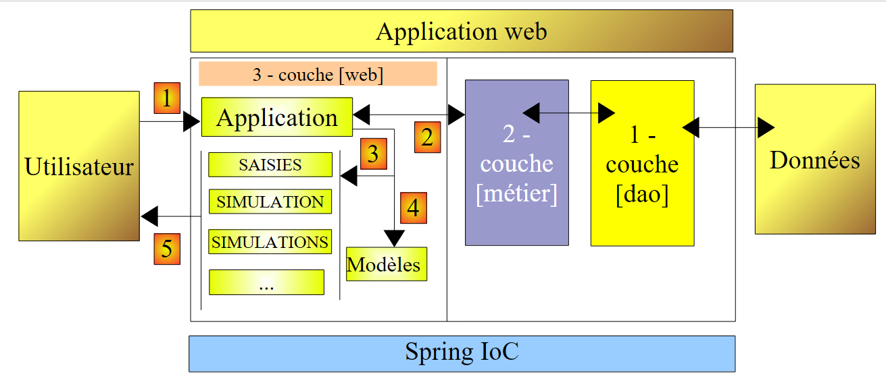
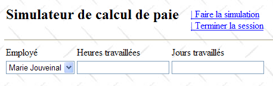
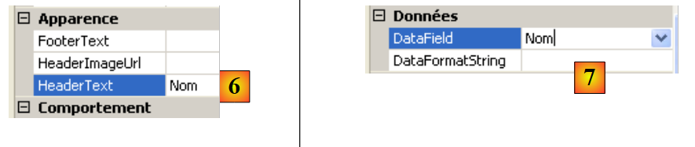
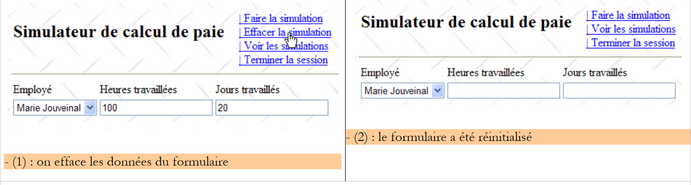
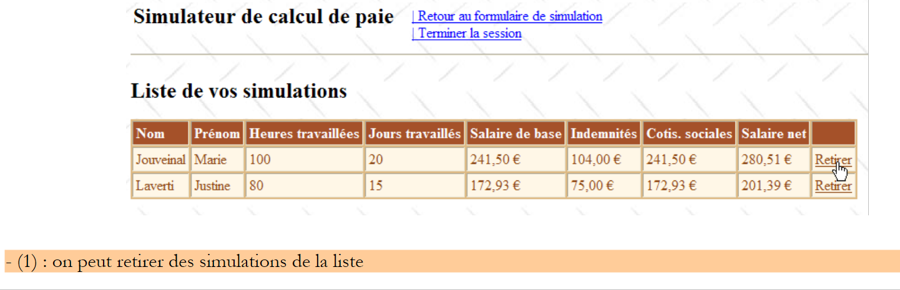
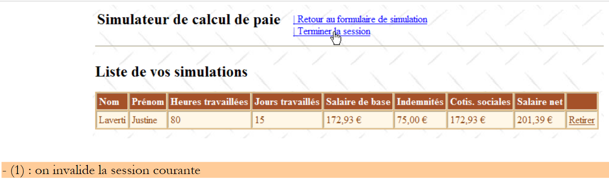

8. Die [SimuPaie]-Anwendung – Version 4 – ASP.NET / Multi-View / Single-Page
Literaturempfehlung: Referenz [1], Webentwicklung mit ASP.NET 1.1, Abschnitte:
-
Serverkomponenten und Anwendungscontroller
-
Beispiele für MVC-Anwendungen mit ASP-Serverkomponenten
Wir werden nun eine abgeleitete Version der zuvor besprochenen dreistufigen ASP.NET-Anwendung untersuchen, die um neue Funktionen erweitert wurde. Die Architektur unserer Anwendung entwickelt sich wie folgt:
 |
Die Verarbeitung einer Client-Anfrage verläuft wie folgt:
- Der Client sendet eine Anfrage an die Anwendung.
- Die Anwendung verarbeitet diese Anfrage. Dazu benötigt sie möglicherweise Unterstützung durch die [Business]-Schicht, die ihrerseits die [DAO]-Schicht benötigt, falls Daten mit der Datenbank ausgetauscht werden müssen. Die Anwendung erhält eine Antwort von der [Business]-Schicht.
- Auf der Grundlage dieser Antwort wählt sie (3) die Ansicht (= die Antwort) aus, die an den Client gesendet werden soll, und stellt ihm (4) die benötigten Informationen (das Modell) zur Verfügung.
- Die Antwort wird an den Client gesendet (5)
Dies ist eine Webarchitektur, die als MVC (Model–View–Controller) bekannt ist:
- [Anwendung] ist der Controller. Er bearbeitet alle Client-Anfragen.
- [Inputs, Simulation, Simulations, ...] sind die Views. Ein View in .NET ist Standard-ASP/HTML-Code, der Komponenten enthält, die initialisiert werden müssen. Die Werte, die diesen Komponenten bereitgestellt werden müssen, bilden das Modell des Views.
Hier werden wir das MVC-Entwurfsmuster wie folgt umsetzen:
- Die Ansichten sind [View]-Komponenten innerhalb einer einzigen Seite [Default.aspx]
- Der Controller ist dann der Code [Default.aspx.cs] für diese einzelne Seite.
Nur einfache Anwendungen können diese MVC-Implementierung unterstützen. Tatsächlich werden bei jeder Anfrage alle Komponenten der Seite [Default.aspx] instanziiert, also alle Ansichten. Beim Senden der Antwort wählt der Steuerungscode der Anwendung eine davon aus, indem er einfach die entsprechende [View]-Komponente sichtbar macht und die anderen ausblendet. Wenn die Anwendung viele Ansichten hat, wird die Seite [Default.aspx] viele Komponenten enthalten, und die Kosten für deren Instanziierung können unerschwinglich werden. Außerdem kann der [Design]-Modus der Seite aufgrund der zu vielen Ansichten unübersichtlich werden. Diese Art von Architektur eignet sich für Anwendungen mit wenigen Ansichten, die von einer einzigen Person entwickelt werden. Wenn sie eingesetzt werden kann, ermöglicht sie die Entwicklung einer MVC-Architektur auf sehr einfache Weise. Genau das werden wir in dieser neuen Version untersuchen.
8.1. Die Ansichten der Anwendung
Dem Benutzer werden folgende Ansichten angezeigt:
- die Ansicht [VueSaisies], die das Simulationsformular anzeigt

- die Ansicht [VueSimulation], die zur Anzeige der detaillierten Simulationsergebnisse dient:

- die Ansicht [VueSimulations], in der die vom Client durchgeführten Simulationen aufgelistet werden

- die Ansicht [EmptySimulationsView], die anzeigt, dass der Client keine Simulationen oder keine weiteren Simulationen mehr hat:

- die Ansicht [ErrorView], die einen oder mehrere Fehler anzeigt:

8.2. Das Visual Web Developer-Projekt für die [web]-Schicht
Das Visual Web Developer-Projekt für die [Web]-Ebene sieht wie folgt aus:
 |
- In [1] finden wir:
- Die Konfigurationsdatei der Anwendung [Web.config] ist identisch mit der der vorherigen Anwendung.
- Die Datei [Global.cs], die die Ereignisse der Webanwendung verarbeitet – in diesem Fall deren Start – ist identisch mit der der vorherigen Anwendung, mit der Ausnahme, dass sie zusätzlich den Start der Benutzersitzung verwaltet.
- Das Formular [Default.aspx] der Anwendung – enthält die verschiedenen Ansichten der Anwendung.
- In [2] befinden sich die Projektverweise – sie sind identisch mit denen der vorherigen Version
8.3. Die Datei [Global.cs]
Die Datei [Global.cs], die die Ereignisse der Webanwendung verarbeitet, ist identisch mit der der vorherigen Anwendung, mit dem Unterschied, dass sie auch den Start der Benutzersitzung verarbeitet:
Global.cs
using System;
using System.Web;
using Pam.Dao.Entites;
using Pam.Metier.Service;
using Spring.Context.Support;
using System.Collections.Generic;
using istia.st.pam.web;
namespace pam_v4
{
public class Global : HttpApplication
{
// --- static application data ---
public static Employe[] Employes;
public static string Msg = string.Empty;
public static bool Erreur = false;
public static IPamMetier PamMetier = null;
// application startup
public void Application_Start(object sender, EventArgs e)
{
...
}
// start user session
public void Session_Start(object sender, EventArgs e)
{
// put an empty simulation list in the session
Session["simulations"] = new List<Simulation>();
}
}
}
- Zeilen 27–34: Wir kümmern uns um den Start der Sitzung. Wir werden die Liste der vom Benutzer durchgeführten Simulationen in diese Sitzung einfügen.
- Zeile 30: Es wird eine leere Liste von Simulationen erstellt. Eine Simulation ist ein Objekt vom Typ [Simulation], das wir in Kürze ausführlich beschreiben werden.
- Zeile 31: Die Liste der Simulationen wird in die Sitzung eingefügt, die mit dem Schlüssel „simulations“ verknüpft ist
8.4. Die Klasse [Simulation]
Ein Objekt vom Typ [Simulation] wird verwendet, um eine Zeile der Simulationstabelle zu kapseln:
Der Code lautet wie folgt:
namespace Pam.Web
{
public class Simulation
{
// simulation data
public string Nom { get; set; }
public string Prenom { get; set; }
public double HeuresTravaillees { get; set; }
public int JoursTravailles { get; set; }
public double SalaireBase { get; set; }
public double Indemnites { get; set; }
public double CotisationsSociales { get; set; }
public double SalaireNet { get; set; }
// manufacturers
public Simulation()
{
}
public Simulation(string nom, string prenom, double heuresTravailllees, int joursTravailles, double salaireBase, double indemnites, double cotisationsSociales, double salaireNet)
{
{
this.Nom = nom;
this.Prenom = prenom;
this.HeuresTravaillees = heuresTravailllees;
this.JoursTravailles = joursTravailles;
this.SalaireBase = salaireBase;
this.Indemnites = indemnites;
this.CotisationsSociales = cotisationsSociales;
this.SalaireNet = salaireNet;
}
}
}
}
Die Felder der Klasse entsprechen den Spalten der Simulationstabelle.
8.5. Die Seite [Default.aspx]
8.5.1. Übersicht
Die Seite [Default.aspx] enthält mehrere [View]-Komponenten, eine für jede Ansicht. Ihr Grundgerüst sieht wie folgt aus:
<%@ Page Language="C#" AutoEventWireup="true" CodeFile="Default.aspx.cs" Inherits="pam_v4.PagePam" %>
<!DOCTYPE html PUBLIC "-//W3C//DTD XHTML 1.0 Transitional//EN" "http://www.w3.org/TR/xhtml1/DTD/xhtml1-transitional.dtd">
<html xmlns="http://www.w3.org/1999/xhtml">
<head id="Head1" runat="server">
<title>Simulateur de paie</title>
</head>
<body background="ressources/standard.jpg">
<form id="form1" runat="server">
<asp:ScriptManager ID="ScriptManager1" runat="server" EnablePartialRendering="true" />
<asp:UpdatePanel runat="server" ID="UpdatePanelPam" UpdateMode="Conditional">
<ContentTemplate>
<table>
<tr>
<td>
<h2>
Simulateur de calcul de paie</h2>
</td>
<td>
<label>
 </label>
<asp:UpdateProgress ID="UpdateProgress1" runat="server">
<ProgressTemplate>
<img src="images/indicator.gif" />
<asp:Label ID="Label5" runat="server" BackColor="#FF8000"
EnableViewState="False" Text="Calcul en cours. Patientez ....">
</asp:Label>
</ProgressTemplate>
</asp:UpdateProgress>
</td>
<td>
<asp:LinkButton ID="LinkButtonFaireSimulation" runat="server"
CausesValidation="False" OnClick="LinkButtonFaireSimulation_Click">
| Faire la simulation<br /></asp:LinkButton>
<asp:LinkButton ID="LinkButtonEffacerSimulation" runat="server"
CausesValidation="False" OnClick="LinkButtonEffacerSimulation_Click">
| Effacer la simulation<br /></asp:LinkButton>
<asp:LinkButton ID="LinkButtonVoirSimulations" runat="server"
CausesValidation="False" OnClick="LinkButtonVoirSimulations_Click">
| Voir les simulations<br /></asp:LinkButton>
<asp:LinkButton ID="LinkButtonFormulaireSimulation" runat="server"
CausesValidation="False" OnClick="LinkButtonFormulaireSimulation_Click">
| Retour au formulaire de simulation<br /></asp:LinkButton>
<asp:LinkButton ID="LinkButtonEnregistrerSimulation" runat="server"
CausesValidation="False" OnClick="LinkButtonEnregistrerSimulation_Click">
| Enregistrer la simulation<br /></asp:LinkButton>
<asp:LinkButton ID="LinkButtonTerminerSession" runat="server"
CausesValidation="False" OnClick="LinkButtonTerminerSession_Click">
| Terminer la session<br /></asp:LinkButton>
</td>
</table>
<hr />
<asp:MultiView ID="Vues1" ActiveViewIndex="0" runat="server">
<asp:View ID="VueSaisies" runat="server">
...
</asp:View>
</asp:MultiView>
<asp:MultiView ID="Vues2" runat="server">
<asp:View ID="VueSimulation" runat="server">
...
</asp:View>
<asp:View ID="VueSimulations" runat="server">
...
</asp:View>
<asp:View ID="VueSimulationsVides" runat="server">
...
</asp:View>
<asp:View ID="VueErreurs" runat="server">
...
</asp:View>
</asp:MultiView>
</ContentTemplate>
</asp:UpdatePanel>
</form>
</body>
</html>
- Zeile 10: das Tag zum Aktivieren von Ajax-Erweiterungen
- Zeilen 11–73: der UpdatePanel-Container, der durch Ajax-Aufrufe aktualisiert wird
- Zeilen 12–72: der Inhalt des UpdatePanel
- Zeilen 13–52: Die Kopfzeile, die in jeder Ansicht angezeigt wird. Sie präsentiert dem Benutzer eine Liste möglicher Aktionen in Form einer Liste von Links.
- Zeile 33: Beachten Sie das Attribut CausesValidation="False", das sicherstellt, dass die Seitenvalidatoren nicht implizit ausgeführt werden, wenn auf den Link geklickt wird. Wenn dieses Attribut weggelassen wird, ist sein Standardwert True. Die Seitenvalidierung kann explizit im serverseitigen Code mithilfe der Operation Page.Validate durchgeführt werden.
- Zeilen 53–57: Eine [MultiView]-Komponente mit einer einzigen Ansicht [VueSaisies]. Aus diesem Grund wurde die anzuzeigende Ansichtsnummer in Zeile 53 fest codiert: ActiveViewIndex="0"
- Zeilen 53–67: Eine [MultiView]-Komponente mit vier Ansichten: die Ansicht [VueSimulation] (Zeilen 59–61), die Ansicht [VueSimulations] (Zeilen 62–64), die Ansicht [VueSimulationsVides] (Zeilen 65–67) und die Ansicht [VueErreurs] (Zeilen 68–70). Eine [MultiView]-Komponente zeigt jeweils nur eine Ansicht an. Um Ansicht #i der Vues2-Komponente anzuzeigen, schreiben Sie den folgenden Code:
8.5.2. Die Kopfzeile „ “
Der Header besteht aus den folgenden Komponenten:
 |
Nr. | Typ | Name | Rolle |
LinkButton | LinkButtonRunSimulation | fordert die Simulationsberechnung an | |
LinkButton | LinkButtonClearSimulation | löscht das Eingabeformular | |
LinkButton | LinkButtonViewSimulations | zeigt die Liste der bereits durchgeführten Simulationen an | |
LinkButton | LinkButtonSimulationForm | kehrt zum Eingabeformular zurück | |
LinkButton | LinkButtonSaveSimulation | speichert die aktuelle Simulation in der Simulationsliste | |
LinkButton | LinkButtonEndSession | beendet die aktuelle Sitzung |
8.5.3. Die Ansicht [ Saisies]
Die [View]-Komponente mit dem Namen [VueSaisies] sieht wie folgt aus:
 |
Nr. | Typ | Name | Rolle |
DropDownList | Mitarbeiter-Kombinationsfeld | Enthält die Liste der Mitarbeiternamen | |
Textfeld | TextfeldStunden | Anzahl der geleisteten Arbeitsstunden – tatsächliche Anzahl | |
Textfeld | TextBoxDays | Anzahl der gearbeiteten Tage – Ganzzahl | |
RequiredFieldValidator | RequiredFieldValidatorHours | prüft, ob das Feld [2] [TextBoxHours] nicht leer ist | |
RegularExpressionValidator | RegularExpressionValidatorHours | prüft, ob das Feld [2] [TextBoxHours] eine reelle Zahl >=0 ist | |
RequiredFieldValidator | RequiredFieldValidatorDays | prüft, ob das Feld [3] [TextBoxDays] nicht leer ist | |
RegularExpressionValidator | RegularExpressionValidatorDays | prüft, ob das Feld [3] [TextBoxDays] eine ganze Zahl >=0 ist |
8.5.4. Die Ansicht [Simulati on]
Die [View]-Komponente mit dem Namen [SimulationView] sieht wie folgt aus:

Sie besteht ausschließlich aus [Label]-Komponenten, deren IDs oben aufgeführt sind.
8.5.5. Die Ansicht [Simu lations]
Die [View]-Komponente mit dem Namen [SimulationView] sieht wie folgt aus:
 |
Nr. | Typ | Name | Rolle |
GridView | GridViewSimulations | Enthält die Liste der Simulationen |
Die Eigenschaften der Komponente [GridViewSimulations] wurden wie folgt definiert:
 |
- in [1]: Klicken Sie mit der rechten Maustaste auf die Option [GridView] / [AutoFormat]
- in [2]: Wählen Sie einen Anzeigetyp für [GridView]
 |
- in [3]: Wählen Sie die Eigenschaften von [GridView] aus
- in [4]: Bearbeiten Sie die Spalten der [GridView]
- in [5]: Fügen Sie eine [BoundField]-Spalte hinzu, die an eine der öffentlichen Eigenschaften des Objekts gebunden wird, das in der [GridView]-Zeile angezeigt werden soll. Das hier angezeigte Objekt ist ein [Simulation]-Objekt.
 |
- in [6]: Geben Sie den Spaltentitel ein
- in [7]: Geben Sie den Namen der Eigenschaft der [Simulation]-Klasse an, die dieser Spalte zugeordnet werden soll.
- [DataFormatString] legt fest, wie die in der Spalte angezeigten Werte formatiert werden sollen.
Die Spalten der Komponente [GridViewSimulations] verfügen über die folgenden Eigenschaften:
Nr. | Eigenschaften |
Typ: BoundField, HeaderText: Name, DataField: Name | |
Typ: BoundField, HeaderText: Nachname, DataField: Nachname | |
Typ: BoundField, HeaderText: Geleistete Arbeitsstunden, DataField: HoursWorked | |
Typ: BoundField, HeaderText: Gearbeitete Tage, DataField: DaysWorked | |
Typ: BoundField, HeaderText: Grundgehalt, DataField: BaseSalary, DataFormatString: {0:C} (Währungsformat, C=Währung) – zeigt das Euro-Symbol an. | |
Typ: BoundField, HeaderText: Zulagen, DataField: Indemnites, DataFormatString: {0:C} | |
Typ: BoundField, Kopfzeile: Sozialversicherungsbeiträge, Datenfeld: SocialSecurityContributions, Datenformat: {0:C} | |
Typ: BoundField, HeaderText: Nettogehalt, DataField: NetSalary, DataFormatString: {0:C} |
Beachten Sie, dass das [DataField] einer vorhandenen Eigenschaft der Klasse [Simulation] entsprechen muss. Am Ende dieser Phase sind alle Spalten vom Typ [BoundField] erstellt worden:
 |
- in [1]: die für die [GridView] erstellten Spalten
- in [2]: Die automatische Spaltenerstellung muss deaktiviert werden, wenn der Entwickler sie manuell definiert, wie wir es gerade getan haben.
Wir müssen noch die Spalte mit dem Link [Entfernen] erstellen:

 |
- in [1]: Fügen Sie eine Spalte vom Typ [CommandField / Delete] hinzu
- in [2]: ButtonType=Link, damit in der Spalte ein Link statt einer Schaltfläche angezeigt wird
- in [3]: CausesValidation=False; das Klicken auf den Link löst keine Validierungsprüfungen aus, die möglicherweise auf der Seite vorhanden sind. Tatsächlich erfordert das Löschen einer Simulation keine Datenvalidierung.
- in [4]: Es ist nur der Löschlink sichtbar.
- in [5]: Der Text dieses Links
8.5.6. Die Ansicht [Simulations sVides]
Die [View]-Komponente mit dem Namen [VueSimulationsVides] enthält lediglich Text:
8.5.7. Die Ansicht [E rrors]
Die [View]-Komponente mit dem Namen [VueErreurs] sieht wie folgt aus:
 |
Nr. | Typ | Name | Rolle |
Repeater | RptErrors | zeigt eine Liste von Fehlermeldungen an |
Mit der Komponente [Repeater] können Sie ASP.NET-/HTML-Code für jedes Objekt in einer Datenquelle, typischerweise einer Sammlung, wiederholen. Dieser Code wird direkt im ASP.NET-Quellcode der Seite definiert:
<asp:Repeater ID="RptErreurs" runat="server">
<ItemTemplate>
<li>
<%# Container.DataItem %>
</li>
</ItemTemplate>
</asp:Repeater>
- Zeile 2: <ItemTemplate> definiert den Code, der für jedes Element in der Datenquelle wiederholt wird.
- Zeile 4: Zeigt den Wert des Ausdrucks „Container.DataItem“ an, der sich auf das aktuelle Element in der Datenquelle bezieht. Da dieses Element ein Objekt ist, wird die ToString-Methode dieses Objekts verwendet, um es in die HTML-Ausgabe der Seite einzufügen. Unsere Objektsammlung ist eine List(Of String)-Sammlung, die Fehlermeldungen enthält. Die Zeilen 3–5 fügen die Sequenzen <li>Message</li> in die HTML-Ausgabe der Seite ein.
8.6. Der Controller [Default.aspx.cs]
8.6.1. Übersicht
Kehren wir zur MVC-Architektur der Anwendung zurück:
 |
- [Default.aspx.cs], der Code für die einzelne Seite [Default.aspx], ist der Anwendungscontroller.
- [Global] ist das [HttpApplication]-Objekt, das die Anwendung initialisiert und eine Referenz auf die [Business]-Schicht enthält.
Das Grundgerüst des Controller-Codes in [Default.aspx.cs] sieht wie folgt aus:
using System.Collections.Generic;
...
public partial class PagePam : Page
{
private void setVues(bool boolVues1, bool boolVues2, int index)
{
// display the requested views
// boolVues1 : true if Vues1 multi-view is to be visible
// boolVues1 : true if the Vues2 multiview is to be visible
// index: index of the Vues2 view to be displayed
...
}
private void setMenu(bool boolFaireSimulation, bool boolEnregistrerSimulation, bool boolEffacerSimulation, bool boolFormulaireSimulation, bool boolVoirSimulations, bool boolTerminerSession)
{
// set menu options
// each Boolean is assigned to the Visible property of the corresponding link
...
}
// page loading
protected void Page_Load(object sender, System.EventArgs e)
{
// initial request processing
if (!IsPostBack)
{
...
}
}
protected void LinkButtonFaireSimulation_Click(object sender, System.EventArgs e)
{
...
}
protected void LinkButtonEffacerSimulation_Click(object sender, System.EventArgs e)
{
....
}
protected void LinkButtonVoirSimulations_Click(object sender, System.EventArgs e)
{
...
}
protected void LinkButtonEnregistrerSimulation_Click(object sender, System.EventArgs e)
{
...
}
protected void LinkButtonTerminerSession_Click(object sender, System.EventArgs e)
{
...
}
protected void LinkButtonFormulaireSimulation_Click(object sender, System.EventArgs e)
{
...
}
protected void GridViewSimulations_RowDeleting(object sender, GridViewDeleteEventArgs e)
{
...
}
}
Als Reaktion auf die erste Anfrage des Benutzers (GET) wird nur das Load-Ereignis in den Zeilen 24–31 verarbeitet. Bei nachfolgenden Anfragen (POST), die über die Menü-Links erfolgen, werden zwei Ereignisse verarbeitet:
- das Load-Ereignis (Zeilen 24–31), aber die boolesche Prüfung für Page.IsPostback (Zeile 27) stellt sicher, dass nichts geschieht.
- das Ereignis, das mit dem angeklickten Link verknüpft ist:
 |
- Zeilen 33–36: Verarbeiten des Klicks auf Link [1]
- Zeilen 38–41: Verarbeitung des Klicks auf Link [2]
- Zeilen 43–46: Klicken auf Link [3] verarbeiten
- Zeilen 58–61: Klicken auf Link [4] verarbeiten
- Zeilen 48–51: Klicken auf Link [5] verarbeiten
- Zeilen 53–56: Klicken auf Link [6] verarbeiten
Um häufig wiederkehrende Code-Sequenzen auszulagern, wurden zwei interne Methoden erstellt:
- setVues, Zeilen 7–14: Legt die anzuzeigende(n) Ansicht(en) fest
- setMenu, Zeilen 16–21: Legt die anzuzeigenden Menüoptionen fest
8.6.2. Das Load-Ereignis
Empfohlene Lektüre: Referenz [1], Webentwicklung mit ASP.NET 1.1:
- den Abschnitt über die [Repeater]-Komponente und die Datenbindung.
Die erste Ansicht, die dem Benutzer angezeigt wird, ist die des leeren Formulars:

Die Initialisierung der Anwendung erfordert den Zugriff auf eine Datenquelle, was fehlschlagen kann. In diesem Fall wird als erste Seite eine Fehlerseite angezeigt:

Das [Load]-Ereignis wird ähnlich wie in früheren ASP.NET-Versionen behandelt:
// page loading
protected void Page_Load(object sender, System.EventArgs e)
{
// initial request processing
if (!IsPostBack)
{
// initialization errors?
if (Global.Erreur)
{
// display view [errors]
...
// menu positioning
...
return;
}
// loading employee names into the combo
...
// menu positioning
...
// view display [input]
...
}
}
Frage: Vervollständigen Sie den obigen Code
8.6.3. Aktion: Führen Sie die Simulation aus
Im Folgenden ist Bildschirm (1) die Anfrage des Benutzers und Bildschirm (2) die Antwort, die die Webanwendung an den Benutzer sendet. Vom Startbildschirm aus kann der Benutzer eine Simulation starten:


 |
Die Prozedur, die diese Aktion verarbeitet, könnte wie folgt aussehen:
protected void LinkButtonFaireSimulation_Click(object sender, System.EventArgs e)
{
// wage calculation
// valid page?
Page.Validate();
if (!Page.IsValid)
{
// view display [input]
...
return;
}
// the page is validated - inputs are retrieved
double HeuresTravaillées = ...;
int JoursTravaillés = ...;
// we calculate the employee's salary
FeuilleSalaire feuillesalaire;
try
{
feuillesalaire = ...
}
catch (PamException ex)
{
// display view [errors]
...
return;
}
// put the result in the session
Session["simulation"] = ...
// displaying results
...
// display views [entry, employee, salary]
...
// menu display
...
}
Frage: Vervollständige den obigen Code
8.6.4. Aktion: Speichern Sie die Simulation
Sobald die Simulation abgeschlossen ist, kann der Benutzer das Speichern anfordern:
 |

Die Prozedur, die diese Aktion verarbeitet, könnte wie folgt aussehen:
protected void LinkButtonEnregistrerSimulation_Click(object sender, System.EventArgs e)
{
// save the current simulation in the list of simulations in the session
...
// the [simulations] view is displayed
...
}
Frage: Vervollständigen Sie den obigen Code
8.6.5. Aktion: Zurück zum Simulationsformular
Empfohlene Lektüre: Referenz [1], [Webentwicklung mit ASP.NET 1.1]: Die Rolle des versteckten Feldes _VIEWSTATE
Sobald die Liste der Simulationen angezeigt wird, kann der Benutzer die Rückkehr zum Simulationsformular anfordern:
 |
Beachten Sie, dass auf Bildschirm (2) das Formular so angezeigt wird, wie es eingegeben wurde. Dabei ist zu beachten, dass diese verschiedenen Ansichten zur selben Seite gehören. Zwischen den Anfragen werden die Werte der Steuerelemente durch den ViewState-Mechanismus beibehalten, sofern für diese Steuerelemente die Eigenschaft „EnableViewState“ auf „true“ gesetzt ist.
Die Prozedur, die diese Aktion verarbeitet, könnte wie folgt aussehen:
protected void LinkButtonFormulaireSimulation_Click(object sender, System.EventArgs e)
{
// view display [input]
...
// menu positioning
...
}
Frage: Vervollständigen Sie den obigen Code
8.6.6. Aktion: Simulation löschen
Zurück im Simulationsformular kann der Benutzer das Löschen der aktuellen Einträge anfordern:
 |
Die Prozedur, die diese Aktion verarbeitet, könnte wie folgt aussehen:
protected void LinkButtonEffacerSimulation_Click(object sender, System.EventArgs e)
{
// RAZ of the form
...
}
Frage: Vervollständigen Sie den obigen Code
8.6.7. Aktion: Simulationen anzeigen
Der Benutzer kann anfordern, die von ihm bereits erstellten Simulationen anzuzeigen:
 |
 |
Die Prozedur, die diese Aktion verarbeitet, könnte wie folgt aussehen:
protected void LinkButtonVoirSimulations_Click(object sender, System.EventArgs e)
{
// simulations are retrieved from the
...
// are there any simulations?
if (...)
{
// view [simulations] visible
...
}
else
{
// view [SimulationsVides]
...
}
// set the menu
...
}
Frage: Vervollständigen Sie den obigen Code
8.6.8. Aktion: Eine Simulation löschen
Der Benutzer kann das Löschen einer Simulation anfordern:
 |
 |
Die Prozedur [GridViewSimulations_RowDeleting], die diese Aktion verarbeitet, könnte wie folgt aussehen:
protected void GridViewSimulations_RowDeleting(object sender, GridViewDeleteEventArgs e)
{
// simulations are retrieved from the
...
// delete the designated simulation (e.RowIndex is the number of the deleted line)
...
// are there any simulations left?
if (...)
{
// fill in the GridView
...
}
else
{
// view [SimulationsVides]
...
}
}
Frage: Vervollständige den obigen Code
8.6.9. Aktion: Sitzung beenden
Der Benutzer kann das Beenden seiner Simulationssitzung anfordern. Dadurch wird der Inhalt der Sitzung verworfen und ein leeres Formular angezeigt:
 |
 |
Die Prozedur, die diese Aktion verarbeitet, könnte wie folgt aussehen:
protected void LinkButtonTerminerSession_Click(object sender, System.EventArgs e)
{
// quit session
...
// display [entries] view
...
// menu positioning
...
}
Frage: Vervollständige den obigen Code
Praxisübung: Implementieren Sie die vorherige Webanwendung auf Ihrem Rechner. Fügen Sie ihr Ajax-Funktionalität hinzu.